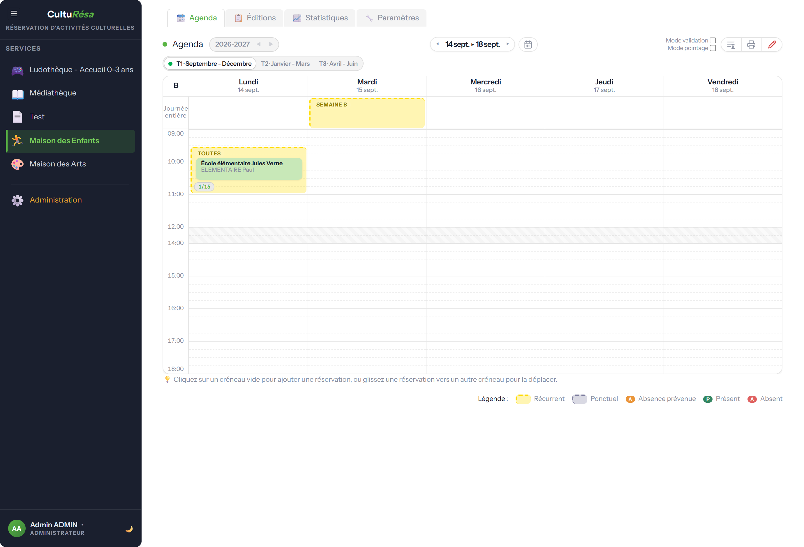
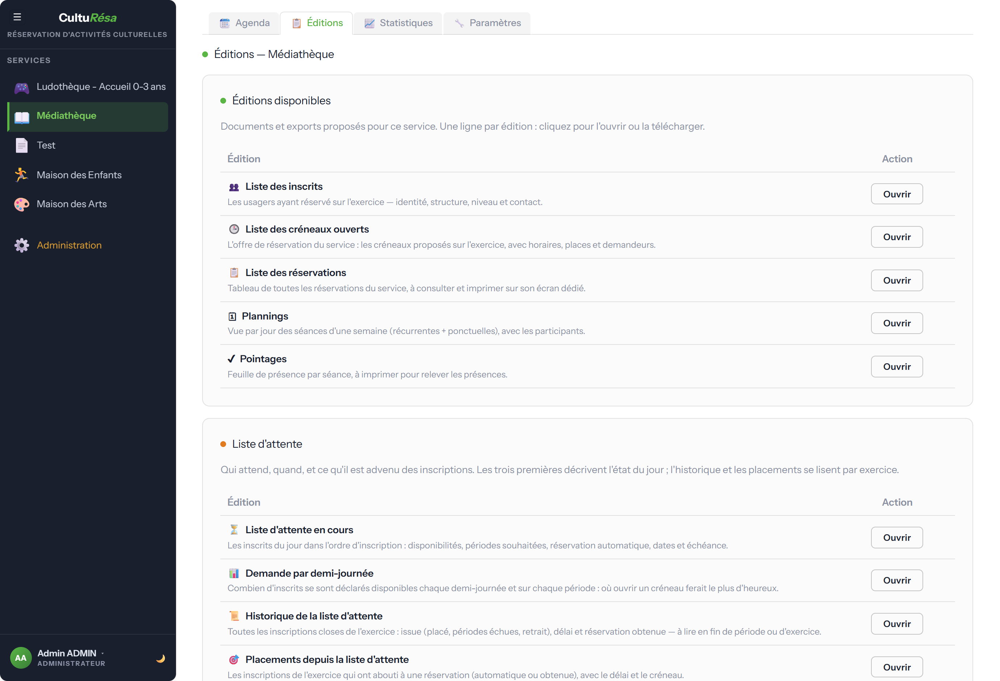
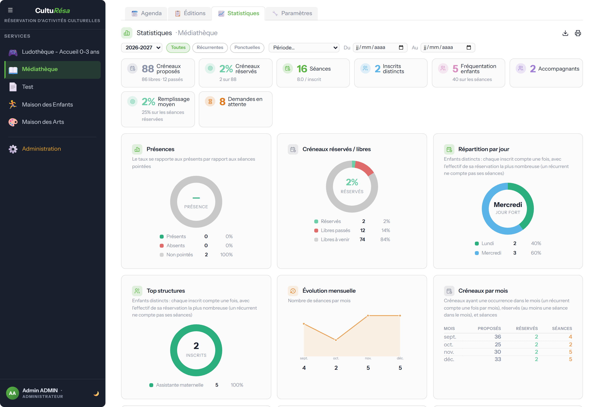
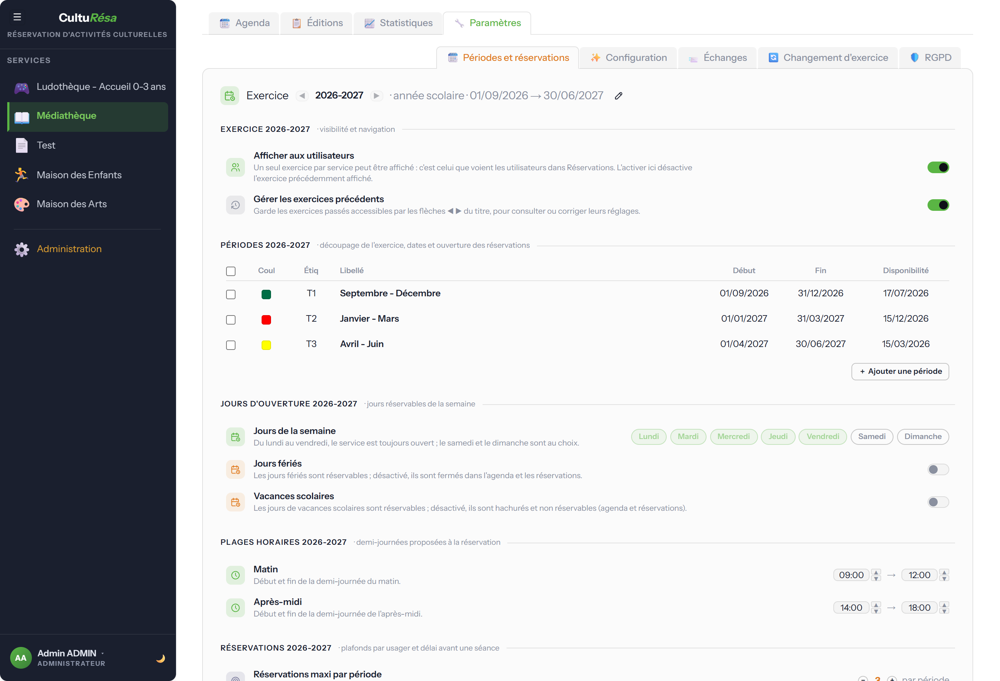
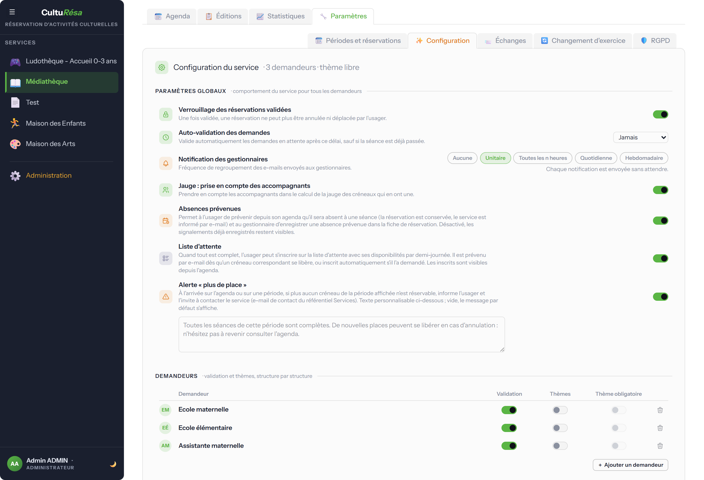
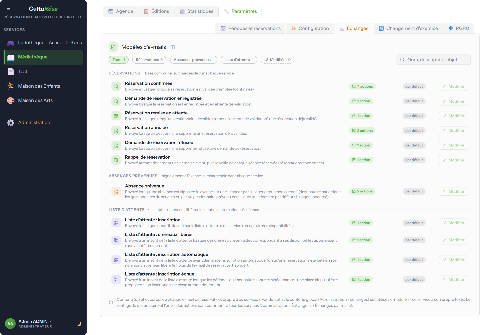
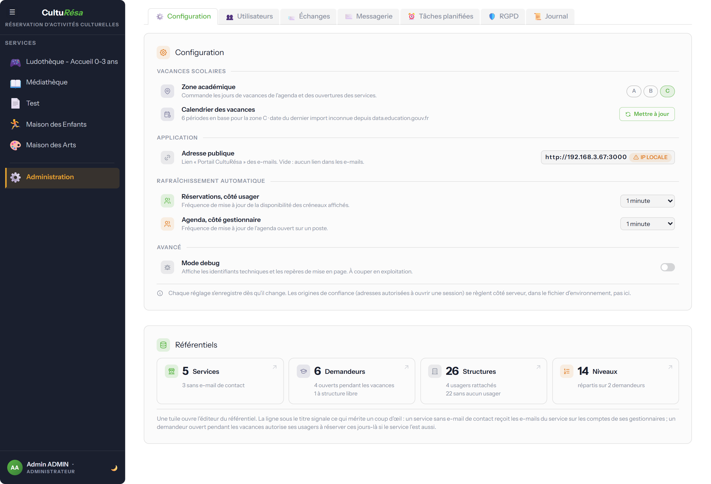
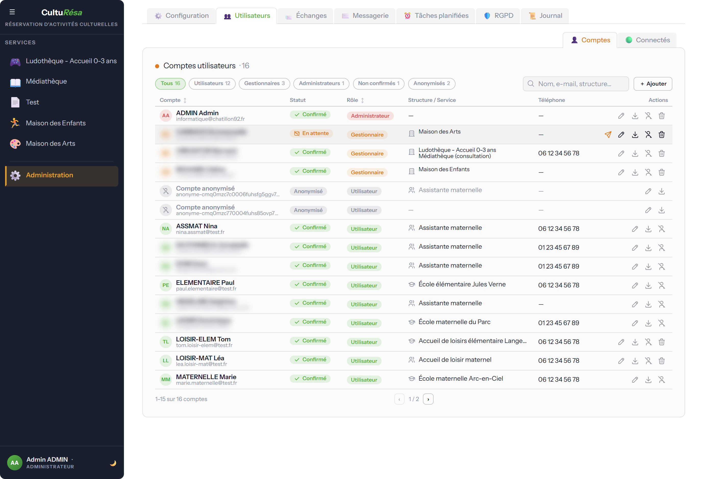
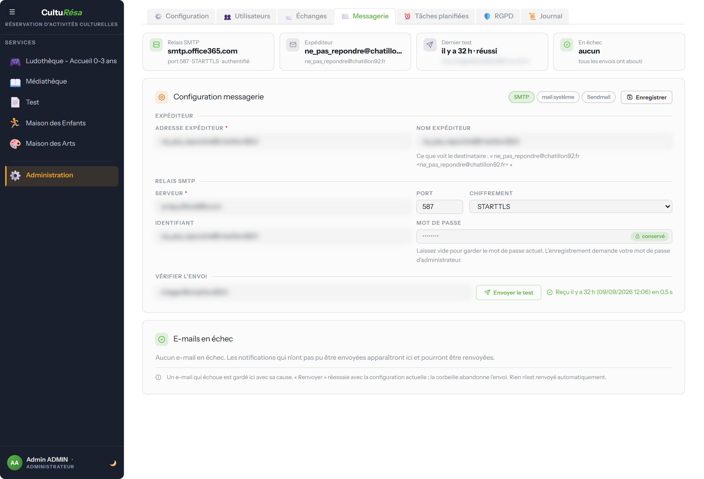
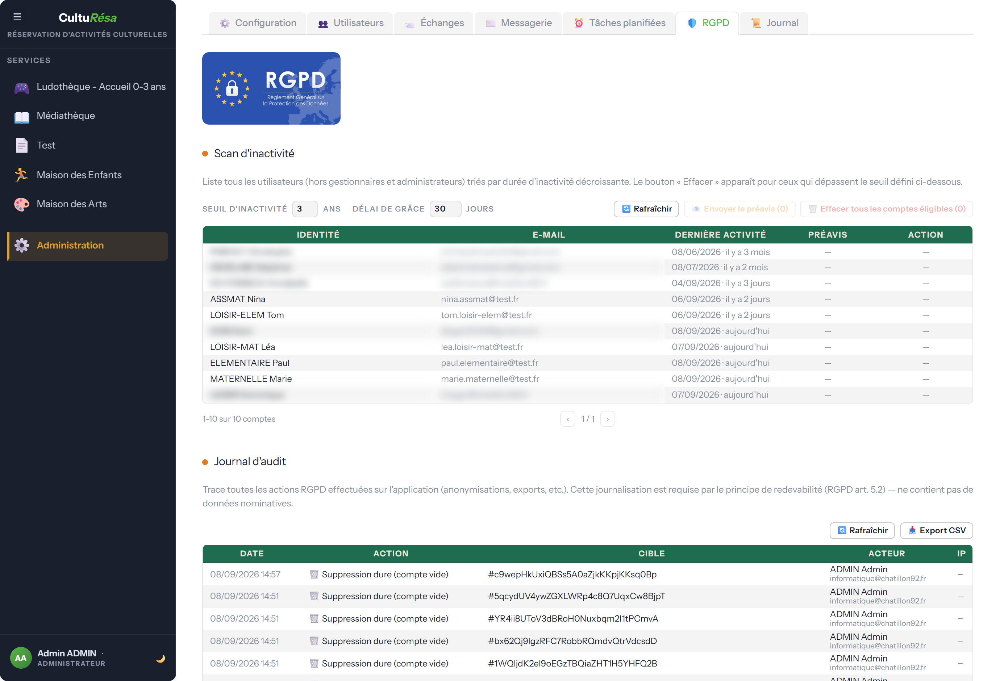

Guide d'utilisation — CultuRésa
Réservation d'activités culturelles.
CultuRésa est l'application de réservation d'activités culturelles. Elle permet aux usagers de réserver des créneaux d'activités proposées par différents services (médiathèque, conservatoire, ludothèque, maison des enfants, maison des arts…), aux gestionnaires d'organiser ces activités et de suivre la présence, et aux administrateurs de piloter l'ensemble du système.
Ce guide est organisé par profil d'utilisateur. Chaque section décrit ce que vous pouvez faire dans l'application. Pour l'installation et l'exploitation serveur, voir le Guide d'administration et le runbook d'exploitation.
Une présentation interactive (fenêtre de bienvenue) reprend l'essentiel de ce guide à la première connexion, adaptée au rôle. On peut la revoir à tout moment via le menu utilisateur → « Revoir la présentation ».
Les trois profils
| Profil | Ce qu'il peut faire |
|---|---|
| Usager | Réserver des créneaux d'activités, gérer ses réservations, modifier son compte. |
| Gestionnaire | Tout ce que fait l'usager, plus la gestion des services qui lui sont confiés : créneaux, réservations, pointage, statistiques et paramètres. |
| Administrateur | Tout ce que fait le gestionnaire, sur tous les services, plus la gestion des utilisateurs, des référentiels, de la messagerie et du RGPD. |
Sommaire : Pour tous les utilisateurs · Usagers · Gestionnaires · Administrateurs · Notions clés · Automatismes
1. Pour tous les utilisateurs
Se connecter
Sur la page de connexion, saisissez votre adresse e-mail et votre mot de passe, puis cliquez sur « Connexion ». Les liens « Créer un compte » et « Mot de passe oublié ? » sont accessibles depuis cet écran.

Figure 1 — Page de connexion
Créer un compte
L'inscription se fait en renseignant votre identité (nom, prénom, e-mail, téléphone), puis en choisissant votre catégorie (le demandeur : établissement ou organisme), votre structure et votre niveau. Le nombre d'enfants et d'accompagnants est obligatoire : au moins 1 de chaque (champs marqués d'un astérisque). L'acceptation de la politique de confidentialité (RGPD) et la recopie d'un code de sécurité sont également demandées.
Un e-mail de vérification vous est ensuite envoyé pour activer votre compte.

Figure 2 — Formulaire de création de compte
Gérer son compte
Depuis « Mon compte », vous pouvez modifier vos informations personnelles, changer votre mot de passe et demander la suppression de votre compte :
- Mon profil — nom, prénom, téléphone, nombre d'enfants et d'accompagnants, catégorie et structure (un seul bouton « Enregistrer » ; catégorie et structure restent modifiables tant que vous n'avez aucune réservation sur l'exercice en cours).
- Changer mon mot de passe — avec rappel des règles de sécurité (12 caractères, majuscule, minuscule, chiffre, caractère spécial).
- Supprimer mon compte — conformément au RGPD, vos données sont anonymisées de façon irréversible après un délai de grâce (e-mail de confirmation valable 24 h).

Figure 3 — Écran « Mon compte »
2. Pour les usagers — réserver une activité
Première connexion
À la première connexion, une fenêtre de bienvenue présente l'essentiel pour démarrer. Vous pouvez la parcourir avec « Suivant » ou la fermer avec « Passer ».

Figure 4 — Fenêtre de bienvenue (première connexion)
L'agenda de réservation
Sélectionnez un service dans le panneau de gauche pour ouvrir son agenda. La vue présente une semaine type avec les créneaux disponibles.
- Semaines A / B — pour les activités en alternance, basculez entre la semaine A (semaines impaires) et la semaine B (semaines paires).
- Période / exercice — un bandeau indique l'année scolaire ou la période en cours.
- Indicateurs — chaque créneau affiche le nombre de places, son statut (en attente de validation, validée) et, le cas échéant, « Clôturé ».
- Légende — un rappel précise le nombre de séances réservables et les conditions du service (récurrent, semaines A/B, validation, thèmes, jauge, jours fériés, vacances scolaires).
- Plus de place — à votre arrivée sur l'agenda ou sur une période, si plus aucun créneau de la période affichée n'est réservable (tout est complet, clos ou hors délai), un message vous en informe et vous invite à contacter le service par e-mail (si le service a activé cette alerte).

Figure 5 — Agenda de réservation côté usager
Réserver, modifier, annuler
- Cliquez sur un créneau disponible dans l'agenda.
- Renseignez les informations demandées : éventuel thème, nombre d'enfants et d'accompagnants.
- Cliquez sur « Enregistrer » pour confirmer. Un e-mail de confirmation vous est envoyé.
Vous pouvez annuler une réservation tant qu'elle n'est pas verrouillée. Si le service active le verrouillage des réservations validées, une réservation validée ne peut plus être annulée ni déplacée. Un bouton permet aussi d'imprimer votre liste de réservations.
Prévenir d'une absence
Vous ne pourrez pas venir à une séance sans vouloir annuler toute votre réservation ? Si le service a activé les absences prévenues, prévenez-le depuis l'agenda :
- Affichez la semaine de la séance et repérez votre réservation.
- Survolez son badge et cliquez sur le macaron A « Prévenir d'une absence », en haut à gauche du badge.
- Indiquez si vous le souhaitez un motif (facultatif), puis confirmez.
Le service est informé par e-mail et le macaron passe en orange. Votre réservation est conservée : seule la séance concernée est signalée. Si vous pouvez finalement venir, cliquez de nouveau sur le macaron puis sur « Retirer l'absence ». Une absence se signale sur une séance à venir (jour même inclus), tant qu'elle n'a pas été pointée par le service. Le bouton « Prévenir d'une absence », à droite des onglets de période, rappelle cette procédure.
Liste d'attente
Plus de place ? Si le service a activé la liste d'attente, le bouton « Liste d'attente », à droite des onglets de période, ouvre une fenêtre où vous indiquez vos disponibilités par demi-journée (matin / après-midi, sur les jours d'ouverture du service) et, si le service compte plusieurs périodes, les périodes souhaitées (toutes par défaut). Vous serez prévenu par e-mail dès que des créneaux correspondant à vos disponibilités se libéreront, dans l'ordre d'inscription. Cochez « Réservation automatique dès qu'un créneau se libère » pour que la réservation soit faite en votre nom, avec les participants de votre fiche : vous en êtes informé par e-mail et retiré de la liste. Validez avec « S'inscrire sur la liste d'attente » ; une fois inscrit, le même bouton permet de mettre à jour vos disponibilités ou de vous retirer de la liste. Si vous avez déjà atteint votre maximum de réservations (pour l'année, ou sur chaque période), vous ne pouvez pas vous inscrire sur la liste d'attente de ce service. Votre inscription vaut jusqu'à la fin de la dernière période souhaitée (l'échéance est rappelée dans la fenêtre) : passé ce terme, elle est close automatiquement et vous en êtes informé par e-mail. Toute réservation obtenue sur le service — faite par vous, par un gestionnaire ou automatiquement — vous retire de la liste. La liste vous est aussi proposée au bon moment : un clic sur un créneau complet affiche un lien « s'inscrire sur la liste d'attente » (la demi-journée du créneau est précochée), la fenêtre « Plus aucune place disponible » porte un bouton d'inscription, et les e-mails de refus ou de suppression par le service rappellent la liste d'attente.
Règles appliquées automatiquement
Lors d'une réservation, l'application vérifie automatiquement :
- la capacité du créneau (selon que les accompagnants comptent ou non dans la jauge) ;
- votre droit d'accès au service, selon votre demandeur ;
- le nombre maximum de réservations autorisé (par service et par période) ;
- les jours de fermeture : un créneau en période de vacances scolaires n'est réservable que si le service et le demandeur sont ouverts ce jour-là ;
- le délai de réservation : les créneaux trop proches dans le temps ne sont pas réservables.
Rappels automatiques
Vous recevez des rappels par e-mail avant vos créneaux : un rappel 7 jours avant (J-7) et un rappel la veille (J-1).
3. Pour les gestionnaires de service
Les gestionnaires accèdent à un espace d'administration limité aux services qui leur sont confiés. Chaque service dispose des onglets Agenda, Éditions, Statistiques et Paramètres.
Agenda — créneaux et réservations
L'agenda du gestionnaire permet de gérer les créneaux et les réservations de chaque usager.
- Créer des créneaux récurrents (jour, horaire, capacité, demandeurs autorisés) ou ponctuels (date précise).
- Déplacer, copier ou supprimer des créneaux.
- Gérer les réservations : ajouter, modifier, annuler ou valider une réservation pour un usager. L'e-mail de validation ou de remise en attente part après un court délai de regroupement (réglé par l'administrateur) : en cas d'hésitation, seul l'état final est notifié.
- Pointage : marquer chaque participant Présent ou Absent après la séance. En cas d'absence, un clic sur le macaron A du badge ouvre la fiche de la réservation pour saisir un motif d'absence (facultatif) — il apparaît ensuite dans l'infobulle du badge et sur la feuille de pointage des Éditions, et il est conservé si le pointage est effacé puis remis.
- Absence prévenue (si activée dans Paramètres › Configuration) : un usager peut signaler à l'avance, depuis son agenda, qu'il sera absent à une séance (le service en est informé par e-mail : à son e-mail de contact s'il est renseigné, sinon à ses gestionnaires). Un gestionnaire prévenu par un autre canal l'enregistre lui-même dans la fiche de la réservation (case « L'usager a prévenu le » suivie de la date à laquelle il a prévenu, puis un motif facultatif, sur toute séance non encore pointée, même passée). La séance porte alors un macaron A orange et l'infobulle indique qui a prévenu et quand ; la réservation reste en place. En mode pointage, le premier clic sur une telle séance pose directement Absent.
- Liste d'attente (si activée dans Paramètres › Configuration) : le bouton « Liste d'attente » de la barre d'options, avec le nombre d'inscrits, ouvre la liste des usagers inscrits, dans l'ordre d'inscription, avec leurs disponibilités, leurs périodes souhaitées, leur choix d'inscription automatique et l'échéance de l'inscription (fin de la dernière période souhaitée) ; un bouton permet de retirer une inscription. La tâche planifiée « Liste d'attente » prévient ou inscrit les usagers dès qu'un créneau réservable se libère, et clôt les inscriptions échues (périodes souhaitées terminées, e-mail à l'usager). Toute réservation obtenue sur le service (par l'usager, par un gestionnaire ou automatiquement) retire l'usager de la liste. Chaque inscription close (inscrit automatiquement, a obtenu une réservation, périodes échues sans place, retiré de la liste d'attente par l'usager ou par le service) est conservée dans un historique qui alimente les Statistiques.
💡 Cliquez sur un créneau vide pour ajouter une réservation, ou glissez une réservation vers un autre créneau pour la déplacer. Pour la déposer dans une autre semaine, survolez la flèche ◂ ou ▸, ou le bord gauche ou droit de la grille, pendant le glisser : l'agenda change de semaine, puis déposez la réservation. Survoler un onglet de période bascule de même sur cette période.
L'agenda affiche une semaine datée : créneaux récurrents et ponctuels, réservations et pointages s'y gèrent au même endroit, semaine après semaine (flèches ◀ ▶ et onglets de période).

Figure 6 — Agenda d'administration d'un service
Éditions — listes et suivi
L'onglet Éditions présente ses éditions en cartes groupées par usage — « Sur l'exercice » pour les listes complètes, « Par semaine ou par période » pour ce qui s'imprime avant les séances — avec, sur chaque carte, un chiffre du jour (inscrits, créneaux, réservations, séances de la semaine, séances restant à pointer sur trente jours), les formats disponibles et, au survol, le téléchargement direct du CSV et « Ouvrir ». Le sélecteur d'exercice en tête de page pré-règle les écrans ouverts depuis les cartes. Chaque écran partage la même barre — bouton de retour aux Éditions (flèche courbée, à gauche du titre), titre avec pictogramme et service, exercice, navigation de plage s'il y a lieu, filtres en pastilles, CSV et PDF — puis une ligne de résumé (effectifs et signalements en pastilles) et un tableau clair dont la colonne triée est en vert. On y trouve la liste des inscrits (les usagers ayant réservé sur l'exercice — identité, structure, niveau, contact et date d'inscription ; tableau triable par clic sur les en-têtes de colonnes ; les comptes anonymisés sont masqués par défaut), la liste des créneaux ouverts (l'offre de réservation du service : jour, horaires, type, période, places et demandeurs de chaque créneau, avec total et rupture par demandeur), le tableau de toutes les réservations (période, date, créneau, demandeur, participant, thème, nombre d'enfants, statut, pointage), une vue Planning hebdomadaire et la feuille de pointage (avec les motifs d'absence ; une absence signalée à l'avance apparaît comme « Absence prévenue », puis « Absent (prévenu) » une fois pointée). À l'écran, la liste des réservations, le Planning et les Pointages se feuillettent feuille par feuille, chaque feuille correspondant à une page du PDF ; une séance n'est jamais coupée en deux. Chaque écran s'imprime en PDF, et les listes (inscrits, créneaux ouverts, réservations) s'exportent en CSV.
Si le service utilise la liste d'attente, un second panneau propose cinq éditions (PDF et CSV), en deux groupes — l'état du jour (avec le nombre d'inscrits en attente et la demi-journée la plus demandée) et l'exercice (inscriptions closes, placements et délai moyen) : la liste d'attente en cours (les inscrits du jour dans l'ordre d'inscription, avec disponibilités, périodes souhaitées, réservation automatique, dates et échéance), la demande par demi-journée (combien d'inscrits se sont déclarés disponibles chaque matin et après-midi, et sur chaque période : où ouvrir un créneau ferait le plus d'heureux), l'historique de la liste d'attente (toutes les inscriptions closes de l'exercice, avec leur issue, le délai et la réservation obtenue — à lire en fin de période ou d'exercice), les placements (les inscriptions ayant abouti à une réservation, automatique ou obtenue, avec le délai moyen ; si la réservation a été supprimée depuis, le créneau reste affiché avec la mention de la suppression et sa date : annulée par l'usager, supprimée par le service ou refusée (avec le nom du gestionnaire), ou retirée avec son créneau ou sa période) et les adresses des inscrits (coordonnées du jour, avec les e-mails prêts à coller dans le champ « Cci » d'une messagerie). Les trois premières décrivent l'état du jour ; l'historique et les placements se lisent par exercice, à la date d'inscription.

Figure 7 — Onglet Éditions d'un service : éditions et liste d'attente
Statistiques
Le tableau de bord du service présente des compteurs (réservations, usagers distincts, en attente, enfants, accompagnants, absences prévenues), le suivi de présence sur les séances passées (prévu / réalisé, taux de présence et de réalisation, absents prévenus ou non) et des graphiques de répartition (par jour, par mois, par structure, par niveau, taux de remplissage). Les données sont filtrables et exportables en CSV.
Si le service utilise la liste d'attente, le tableau de bord montre aussi qui n'a pas trouvé de place : compteurs « En attente aujourd'hui », « Placés depuis la liste » (inscription automatique ou réservation obtenue ensuite, avec le délai moyen) et « Sans place (périodes échues) » (inscriptions closes sans réservation : périodes souhaitées terminées, ou retrait par l'usager / le service — détail sous le compteur), un anneau « Issue des inscriptions », la répartition des sans-place par catégorie et par structure et les inscriptions par mois. Le filtre de dates s'applique à la date d'inscription. « En attente » et « Placés » se lisent à tout moment ; le compteur « Sans place » ne prend son sens qu'en fin de période ou d'exercice, une fois les inscriptions échues : c'est la mesure de la demande non satisfaite de l'année.

Figure 8 — Statistiques d'un service
Paramètres — Périodes et réservations
Cet onglet regroupe, dans un seul panneau, tout ce qui dépend de l'exercice affiché (navigué avec les flèches ◀ ▶ du titre) : la visibilité de l'exercice, ses périodes (libellé, dates, couleur, date d'ouverture des réservations), ses jours d'ouverture, ses plages horaires matin / après-midi et ses règles de réservation (maximums par période et par an, délai limite avant une séance). Les réglages s'enregistrent automatiquement quelques instants après chaque modification, avec une pastille « Enregistré » en haut à droite ; seuls l'exercice (crayon du titre) et les périodes (« Ajouter une période », puis « Modifier » ou « Supprimer » après avoir coché une ligne) passent par une fenêtre dédiée. Le verrouillage des réservations validées, l'auto-validation et la notification des gestionnaires se règlent dans l'onglet Configuration.

Figure 9 — Paramètres : périodes et réservations
Exercices et bascule « Afficher aux utilisateurs »
Un exercice représente une saison / année scolaire ; il regroupe ses propres périodes, jours d'ouverture, plages horaires et règles de réservation. Un service peut détenir plusieurs exercices en parallèle, mais un seul est montré aux utilisateurs à la fois : celui dont l'interrupteur « Afficher aux utilisateurs » est activé (premier réglage du panneau, sous le titre). Activer un exercice désactive automatiquement le précédent ; si aucun n'est activé, le service n'affiche aucune réservation côté usager.
Cela permet de préparer le prochain exercice longtemps à l'avance :
- Le gestionnaire crée le nouvel exercice (via « Changement d'exercice », ou en l'ajoutant manuellement) et le paramètre tranquillement — périodes, créneaux, ouvertures, maximums. Tant que son interrupteur n'est pas activé, ce nouvel exercice reste invisible pour les usagers.
- Pendant toute cette préparation, les utilisateurs continuent de consulter et réserver sur l'exercice précédent, qui reste affiché. Les deux exercices peuvent coexister, même si leurs dates se chevauchent.
- Quand le gestionnaire est prêt — le plus souvent une fois l'exercice précédent achevé et le nouveau entièrement paramétré — il bascule en activant « Afficher aux utilisateurs » sur le nouvel exercice, dans Paramètres → Périodes et réservations. À cet instant, et à cet instant seulement, les usagers voient le nouvel exercice.
La bascule n'impose aucune condition : elle peut se faire à tout moment (rien n'oblige à attendre la fin de l'exercice précédent). L'assistant « Changement d'exercice » automatise la création du nouvel exercice (reconduction des périodes et créneaux avec dates décalées) et lui transfère ce drapeau ; la case reste modifiable à la main ensuite.
Paramètres — Configuration (accès et thèmes)
L'onglet regroupe dans un seul panneau trois blocs, tous enregistrés automatiquement quelques instants après chaque modification : une pastille « Enregistré » s'affiche en haut à droite du panneau (en cas d'échec, le message d'erreur y apparaît en rouge).
- Paramètres globaux : verrouillage des réservations validées (une fois validée, une réservation ne peut plus être annulée ni déplacée par l'usager), auto-validation des demandes (délai après lequel une demande en attente est validée d'office, « Jamais » pour s'en passer), notification des gestionnaires (fréquence de regroupement des e-mails : aucune, « Unitaire » — chaque notification part sans attendre —, toutes les n heures, quotidienne ou hebdomadaire, avec l'intervalle, l'heure et le jour choisis), prise en compte des accompagnants dans la jauge, absences prévenues (l'usager peut signaler depuis son agenda qu'il sera absent à une séance, le gestionnaire l'enregistrer dans la fiche de réservation ; activé par défaut), liste d'attente (l'usager dépose ses disponibilités par demi-journée et est prévenu par e-mail, ou inscrit automatiquement, dès qu'un créneau se libère ; activé par défaut) et alerte « plus de place » (à l'arrivée sur l'agenda ou sur une période, si plus aucun créneau de la période affichée n'est réservable, une fenêtre informe l'usager et l'invite à contacter le service via l'e-mail de contact du référentiel Services ; le texte du message se personnalise dans la zone sous le réglage, vide il reprend le message par défaut).
- Demandeurs : pour chaque structure autorisée à réserver, la validation des demandes, les thèmes (l'usager renseigne un thème à la réservation) et le thème obligatoire. « Ajouter un demandeur » ajoute une ligne, la corbeille en bout de ligne retire la structure.
- Thèmes : le mode « Thème libre » (texte saisi par l'usager) ou « Liste de thèmes » (choix imposé parmi la liste). En mode liste, « Ajouter un thème » ouvre une ligne à saisir ; la corbeille demande confirmation avant de retirer un thème (les réservations déjà faites conservent le leur).

Figure 10 — Paramètres : configuration des accès par demandeur
Paramètres — Échanges (e-mails du service)
Chaque service peut personnaliser le contenu de ses e-mails de réservation : réservation confirmée, demande enregistrée, réservation annulée, réservation non validée (refus), rappel de réservation, absence prévenue et liste d'attente (inscription, créneaux libérés, inscription automatique, inscription échue). Le bouton « Modifier » personnalise le contenu ; à défaut, le gabarit global est utilisé. Le routage, le destinataire et l'activation de l'envoi sont, eux, globaux (voir Administration → Échanges).

Figure 11 — Paramètres : e-mails personnalisés par service
Paramètres — Changement d'exercice
Bascule le service vers un nouvel exercice (nouvelle saison / année scolaire) : les périodes du nouvel exercice sont créées avec des dates décalées à partir de l'exercice précédent ; les exercices antérieurs restent consultables. Le panneau s'ouvre sur trois tuiles qui annoncent ce que la bascule reconduirait : le dernier exercice (bornes, affiché ou non aux utilisateurs), les périodes à reconduire, les créneaux à recréer (récurrents et lots multi-ponctuels). En dessous, deux cartes côte à côte. Créer l'exercice propose trois interrupteurs — périodes à l'identique, créneaux récurrents, lots multi-ponctuels — chacun avec le nombre concerné en pastille ; sans les périodes, rien n'est reconduit et le bouton se grise. Revenir à l'exercice précédent n'apparaît que si la dernière bascule est annulable : une bande rouge compte les réservations qui seraient supprimées (orange s'il n'y en a aucune) et une case « J'ai compris » déverrouille le bouton. Les deux actions demandent une confirmation en modale, et une ligne en pied rappelle la date et l'auteur de la dernière bascule.
Paramètres — RGPD (usagers du service)
Vue RGPD limitée aux usagers rattachés au service. Deux cartes rappellent les droits exerçables ici : Exporter (droit d'accès, article 15 : profil + historique des réservations, téléchargement JSON) et Anonymiser (droit à l'effacement, article 17 : nom, prénom, e-mail et téléphone vidés, compte verrouillé, réservations conservées ; irréversible). La liste présente chaque usager avec sa dernière activité et une jauge d'inactivité graduée sur le seuil de rétention ; une pastille signale les comptes au-delà du seuil. Les actions se lancent depuis la ligne (flèche = exporter, personne barrée = anonymiser). Le pilotage RGPD global (préavis, anonymisation en masse, journal d'audit) reste dans Administration → RGPD.
4. Pour les administrateurs
Les administrateurs disposent de toutes les fonctions des gestionnaires, sur l'ensemble des services, ainsi que de la gestion globale de l'application via l'onglet « Administration ».
Configuration et référentiels
La page Configuration présente les réglages de l'application en lignes, chacune avec son
pictogramme, son libellé et une phrase qui dit à quoi elle sert ; chaque réglage s'enregistre dès
qu'il change et une pastille « enregistré » le confirme dans l'en-tête. Groupes : Vacances
scolaires (zone académique A, B ou C ; calendrier des vacances avec le nombre de périodes en
base, la date du dernier import et le bouton « Mettre à jour » depuis data.education.gouv.fr),
Application (adresse publique utilisée par le lien « Portail CultuRésa » des e-mails ; une
pastille « IP locale » signale une adresse privée qui ne serait pas joignable hors du réseau),
Rafraîchissement automatique (réservations côté usager, agenda côté gestionnaire) et
Avancé (interrupteur du mode debug, à couper en exploitation). En dessous, les
référentiels — Services, Demandeurs, Structures et Niveaux — se présentent en
tuiles avec leur effectif et une ligne de signalement (services sans e-mail de contact, demandeurs
ouverts pendant les vacances, structures sans usager, répartition des niveaux) ; une tuile ouvre
l'éditeur. Chaque éditeur travaille en tampon : les lignes créées (filet vert, pastille
« nouveau ») ou changées (filet orange, pastille « modifié ») sont comptées en pied de fenêtre
et rien n'est écrit avant « Enregistrer » ; « Annuler » revient à l'état enregistré. La
corbeille demande confirmation dans un bandeau rouge qui nomme l'élément et ce qui disparaît avec
lui. Le référentiel des services porte, en plus du nom et de l'icône, un e-mail de
contact générique (ex. maisondesarts@chatillon92.fr) proposé aux usagers quand plus aucune
place n'est disponible ; s'il est renseigné, c'est aussi lui qui reçoit les e-mails adressés au
service (absences prévenues, récapitulatifs de réservations, déclencheurs dont le destinataire
est « Le service ») à la place des comptes gestionnaire rattachés ; la colonne
Gestionnaires de l'éditeur rappelle, pour chaque service, qui reçoit ces e-mails et signale
un service sans e-mail ni gestionnaire, où personne ne les recevrait.

Figure 12 — Configuration générale et référentiels
Utilisateurs
L'onglet a deux sous-onglets. « Comptes » : la liste des utilisateurs permet de rechercher (nom, e-mail, structure), filtrer et modifier les comptes : informations, rôle (utilisateur, gestionnaire, administrateur), structure / service rattaché, services gérés et statut RGPD. Des filtres rapides au-dessus du tableau isolent une population avec son effectif : tous, utilisateurs, gestionnaires, administrateurs, non confirmés, anonymisés. Chaque ligne montre l'avatar et l'e-mail du compte, son statut — « Confirmé » (adresse e-mail confirmée), « En attente » (le compte ne peut pas encore se connecter) ou « Anonymisé » — son rôle et son affiliation. Les actions apparaissent au survol de la ligne : modifier la fiche (crayon), exporter les données RGPD (flèche), anonymiser (personne barrée), et selon le compte : renvoyer le mail de confirmation (avion, compte en attente), réinitialiser la double authentification (clé, second facteur actif) ou supprimer définitivement (corbeille, compte sans aucune réservation : test, spam).
« Connectés » liste les comptes dont une session est encore valide au sens de la déconnexion automatique (2 h sans action pour un usager, 15 min pour un gestionnaire ou un administrateur, plafond de 24 h ou 8 h), avec leur dernière action, la date de connexion, les appareils et le nombre de sessions ; le tableau se rafraîchit toutes les 30 secondes. « Déconnecter » révoque toutes les sessions d'un compte sur tous ses appareils (poste resté ouvert…) et laisse une trace dans le Journal. Aucune adresse IP n'est affichée. Le nombre de sessions reste contenu : un utilisateur déjà connecté qui rouvre la page de connexion est renvoyé à l'accueil, chaque nouvelle connexion ferme les sessions précédentes du même navigateur, et un compte ne garde que ses cinq sessions les plus récentes.

Figure 13 — Gestion des comptes utilisateurs
Échanges — e-mails (réglages globaux)
L'onglet Échanges règle les e-mails au niveau global (communs à tous les services), en deux volets :
- Échanges par mail — les actions sont regroupées en trois familles (Réservations, Rappels et absences, Liste d'attente) ; une pastille devant chaque libellé dit qui déclenche l'action : l'usager (vert), un gestionnaire (orange) ou un automatisme (gris). Pour chaque action, le type d'e-mail envoyé, son destinataire et un interrupteur d'envoi (la ligne s'estompe quand l'envoi est coupé). Sous le titre, le délai de regroupement des notifications de validation (5 minutes par défaut) : quand un gestionnaire valide ou remet en attente une réservation, l'e-mail part après ce délai et ne reflète que l'état final — une hésitation (validé, dévalidé, validé…) ne produit qu'un e-mail au plus, ou aucun si l'état revient à celui que l'usager connaissait. 0 = envoi immédiat à chaque clic.
- Modèles d'e-mails — l'objet et le corps de tous les types, classés en quatre familles (Compte et sécurité, Gestionnaires, Réservations, Personnalisés), avec des filtres par famille, un filtre « Modifiés » qui isole les textes retouchés et une recherche. Chaque ligne porte l'état de son texte (« par défaut » ou « modifié ») et, pour les e-mails de réservation, le nombre d'actions qui l'utilisent dans « Échanges par mail ». Les e-mails de réservation servent de base surchargeable par chaque service (onglet Échanges du service) ; les e-mails système (compte, sécurité, test) sont toujours envoyés. On peut aussi créer des types personnalisés globaux, supprimables tant qu'aucune action ne les utilise.
Messagerie
L'onglet Messagerie configure l'envoi des e-mails et permet de relancer les envois en échec. Quatre tuiles résument l'état : le relais SMTP enregistré (serveur, port, chiffrement), l'expéditeur tel que le voit le destinataire, le dernier e-mail de test (date, destinataire, issue, durée ; mémorisé d'une visite à l'autre) et le nombre d'e-mails en échec. Le mode d'envoi (SMTP, mail système, Sendmail) se choisit dans l'en-tête du panneau ; les champs du relais s'estompent quand l'envoi est confié au système. Le formulaire est découpé en trois groupes : Expéditeur, Relais SMTP (le mot de passe déjà enregistré est signalé « conservé », laissez le champ vide pour le garder) et Vérifier l'envoi. Une pastille « modifié » apparaît dès qu'un champ change ; « Enregistrer » demande le mot de passe de l'administrateur. Les e-mails en échec sont listés avec leur cause, le nombre d'essais et, au survol, « Renvoyer » ou la corbeille qui abandonne l'envoi ; rien n'est renvoyé automatiquement.

Figure 14 — Configuration de la messagerie
RGPD et conservation des données
L'onglet RGPD présente la conservation des données en trois étapes : inactivité tolérée (seuil en années), préavis de suppression par e-mail, puis anonymisation passé le délai de grâce (30 jours par défaut), avec l'effectif de comptes à chaque étape. Les comptes sont regroupés — « Au-delà du seuil » d'abord, puis « Actifs » — avec une jauge d'inactivité rapportée au seuil et, au survol, les actions : export des données, envoi du préavis, anonymisation. Le journal d'audit (historique immuable des actions liées aux données personnelles) se lit en frise chronologique par jour, filtrable par nature d'action, et s'exporte en CSV.

Figure 15 — RGPD : conservation des données et journal d'audit
Journal des actions privilégiées
L'onglet Journal retrace les actes d'exploitation sensibles : changements de rôle, déconnexions forcées, réinitialisations de double authentification, opérations sur les sauvegardes (création, restauration, téléchargement, suppression), modification de la configuration SMTP, suppression d'un service, changement de catégorie ou de structure par un usager depuis « Mon compte ». Il se lit en frise chronologique par jour : heure, pictogramme teinté selon la portée de l'acte (rouge pour les destructions et restaurations, orange pour ce qui touche aux accès), libellé avec son détail (valeur avant et après pour un changement, nom du fichier pour une sauvegarde), acteur avec son rôle, adresse IP vue par le serveur. Les pastilles filtrent par famille (Comptes, Accès, Affiliations, Sauvegardes, Configuration, Services) et le champ de recherche affine sur l'acteur, la cible, le détail ou l'IP ; « CSV » exporte la sélection. Les 2 000 entrées les plus récentes sont affichées ; le journal est conservé deux ans puis purgé par la tâche de rétention. Les exports et anonymisations RGPD, eux, restent dans l'onglet RGPD.
5. Notions clés
- Demandeur — l'établissement ou l'organisme auquel un usager est rattaché. Il conditionne l'accès aux services et les jours d'ouverture.
- Structure — unité organisationnelle sous un demandeur ; rattacher un usager à une structure lui fait hériter du demandeur.
- Niveau — classification (par demandeur) utilisée dans le profil et les statistiques.
- Service — une activité culturelle, avec ses propres créneaux, périodes, règles et e-mails.
- Période / Exercice — une période est une plage de dates (saison, semestre) ; l'exercice correspond à l'année (ex. « 2025-2026 »).
- Créneau — un créneau récurrent se répète chaque semaine ; un créneau ponctuel correspond à une date précise (un créneau = un jour).
- Semaines A / B — alternance pour les activités bi-hebdomadaires : semaine impaire = A, semaine paire = B.
- Validation / verrouillage — une réservation validée peut être verrouillée (selon le réglage du service), empêchant toute annulation ou déplacement côté usager.
- Pointage / absence prévenue — le pointage constate la présence ou l'absence après la séance ; l'absence prévenue est un signalement à l'avance (usager ou gestionnaire) qui n'annule pas la réservation et pré-remplit le pointage « Absent ».
- Jauge — la capacité d'un créneau ; selon le service, les accompagnants y sont comptés ou non.
- Vacances scolaires — récupérées depuis le calendrier officiel selon la zone ; un jour de vacances n'est réservable que si le service et le demandeur sont ouverts.
6. Automatismes en arrière-plan
Plusieurs traitements s'exécutent automatiquement, sans intervention :
- Validation automatique des réservations après un délai paramétré, avec récapitulatif envoyé au service (à son e-mail de contact s'il est renseigné, sinon à ses gestionnaires).
- Rappels de réservation envoyés aux usagers (J-7 et J-1).
- Notifications de validation regroupées : l'e-mail de validation ou de remise en attente part après le délai réglé dans Échanges et ne reflète que l'état final.
- Liste d'attente : toutes les 5 minutes, clôture des inscriptions échues (périodes souhaitées terminées, e-mail à l'usager) puis, pour chaque inscrit et dans l'ordre d'inscription, recherche des créneaux réservables correspondant à ses disponibilités et périodes — inscription automatique si demandée, sinon e-mail « créneaux libérés » (nouveautés seulement).
- Conservation des données : anonymisation des comptes inactifs après l'avis de suppression.
Voir aussi
- Guide d'administration — installation serveur, base de données, sauvegardes.
- Exploitation — runbook d'exploitation au quotidien.
- Présentation interactive intégrée à l'application (menu utilisateur → « Revoir la présentation »).